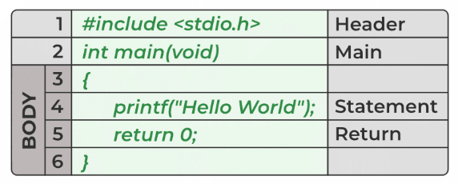

Many later languages have borrowed syntax/features directly or indirectly from the C language.
Like syntax of Java, PHP, JavaScript, and many other languages are mainly based on the C language.
C++ is nearly a superset of C language (Only a few programs may compile in C, but not in C++).
So, if a person learns C programming first, it will help him to learn any modern programming language
as well. As learning C help to understand a lot of the underlying architecture of the operating system.
Like pointers, working with memory locations, etc.
After the above discussion, we can formally assess the structure of a C program. By structure, it is meant that any program can be written in this structure only. Writing a C program in any other structure will hence lead to a Compilation Error. The structure of a C program is as follows:
